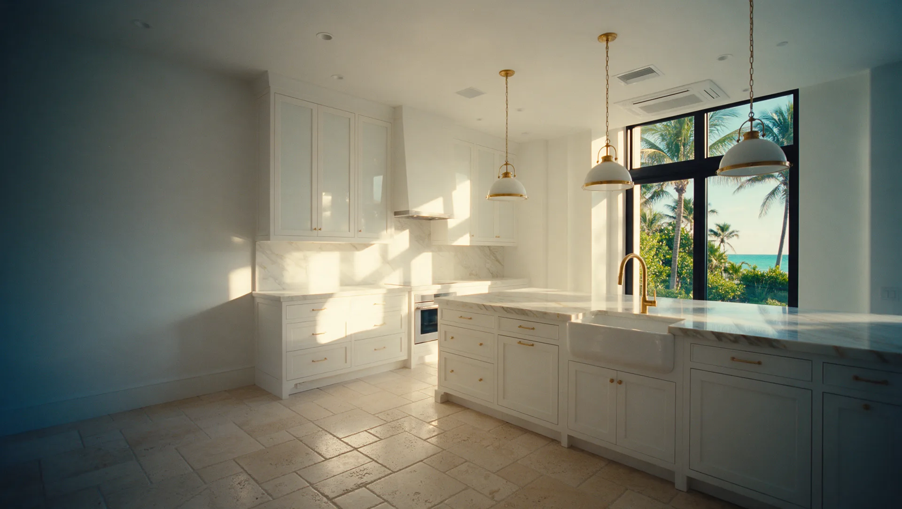
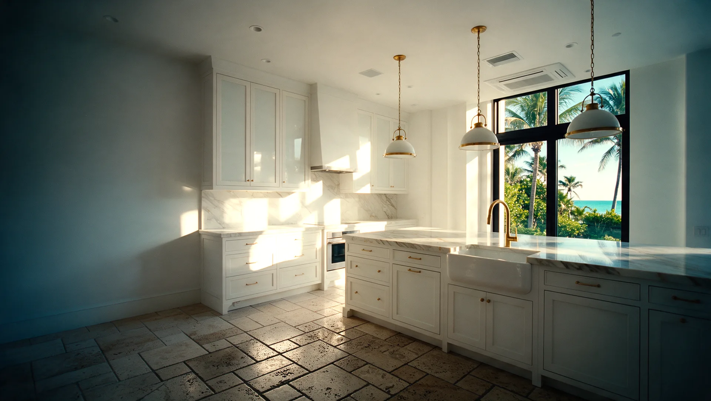
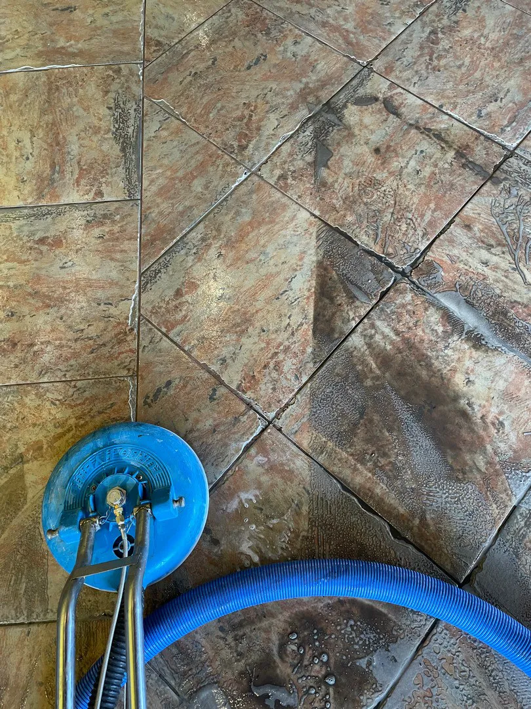
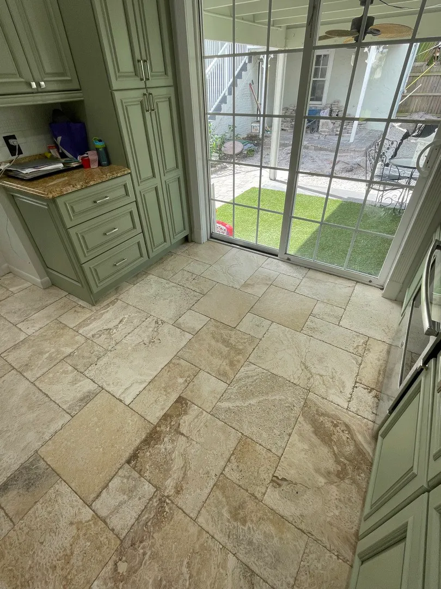
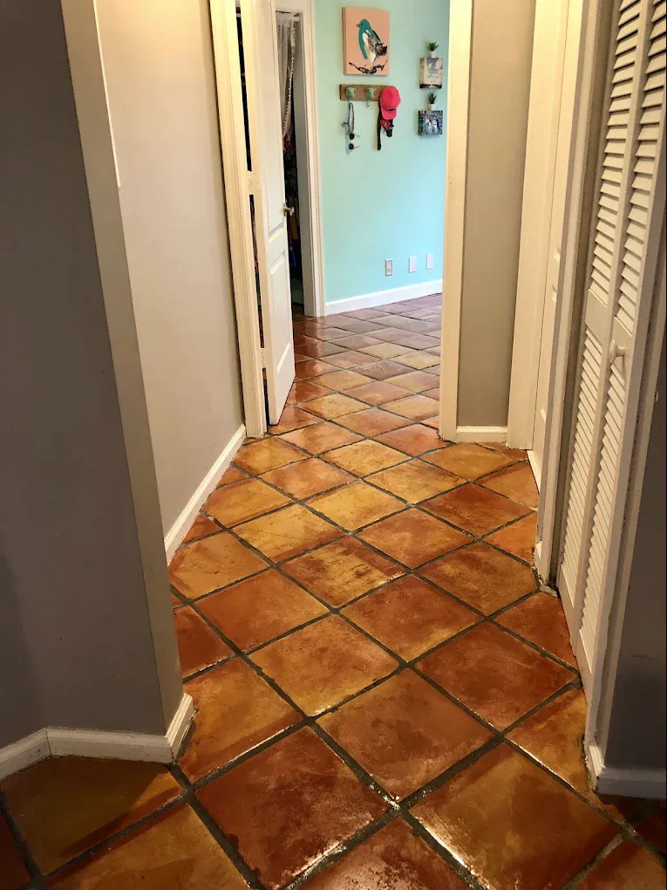
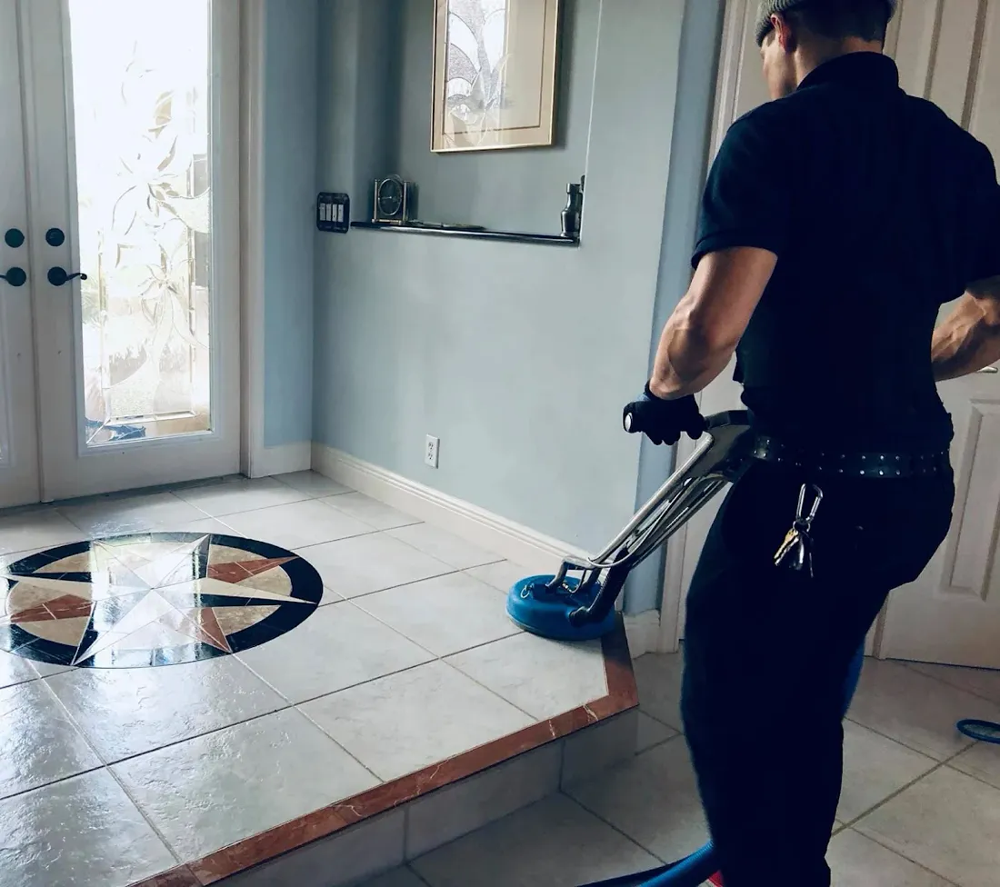
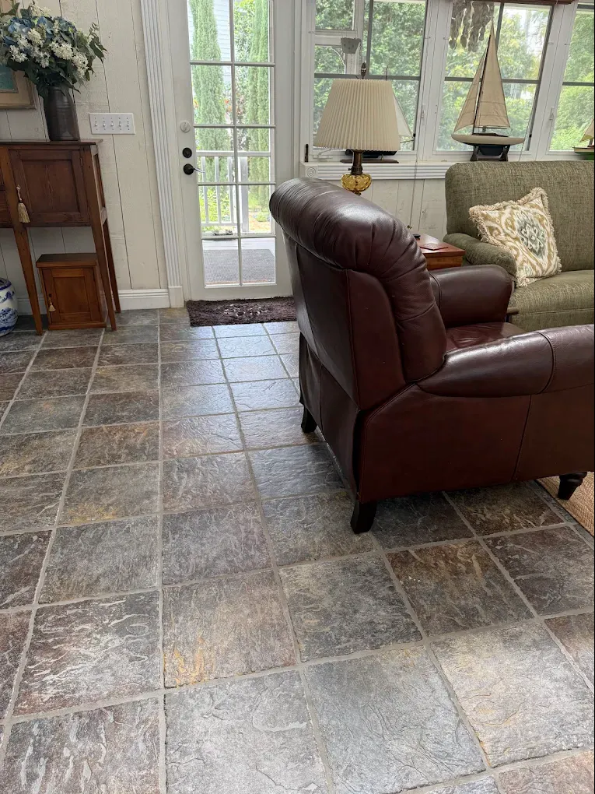
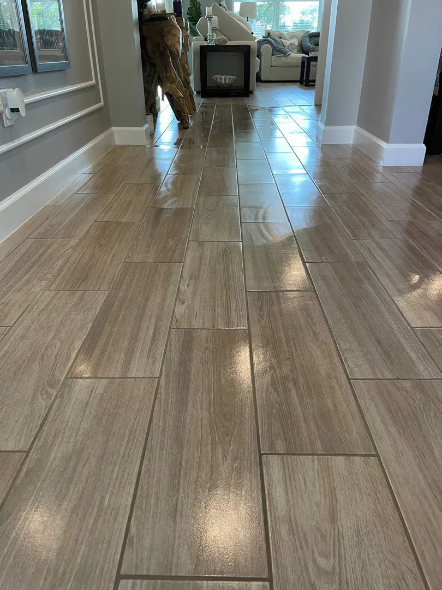
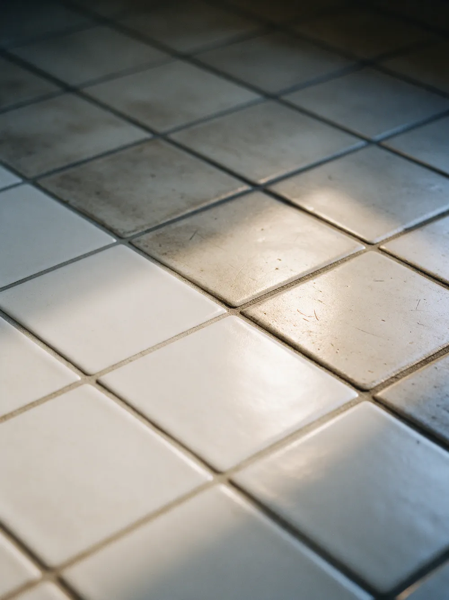

Tile & grout cleaning in Palm Beach County
Bright grout and clean tile, from kitchens and baths to entries and patios. No hand scrubbing, no residue, and a 100% satisfaction guarantee.
- 240five-star Google reviews
- 15+years in Palm Beach County
- 100%satisfaction guarantee
What does professional tile and grout cleaning include?
Harbor's tile and grout cleaning follows six steps: a pre-inspection with floor protection, a pre-spray to break down buildup, machine agitation into the grout lines, hot-water extraction to flush out the soil, air movers to speed drying, and a neutral rinse so no residue is left behind.
Grout sealing is available as an add-on, and every job is backed by a 100% satisfaction guarantee.

Drag to compare. An illustration of a travertine kitchen floor before and after a deep tile and grout clean: years of darkened grout and dull stone, refreshed.
Our six-step tile & grout process
Every step has a job. Together they reach the soil that sits below the surface of the grout, where a mop cannot.
Inspect and protect
We walk the floor with you, note problem areas and stains, and protect the rooms around the work area.
Pre-spray
A cleaning solution goes down first and is given time to loosen grease, soap scum and built-up grime.
Machine agitation
A bristle agitation machine works the solution deep into every grout line. More even and more thorough than scrubbing by hand.
Hot-water extraction
Hot water flushes the loosened soil out of the tile and grout and pulls it away, instead of spreading it around.
Air movers
Air movers go down to speed up drying, so your floor is back in use sooner.
Neutral rinse
A final neutral rinse leaves nothing behind. No sticky film for new dirt to cling to.
The floors and rooms we clean
If it is tile with grout, we can bring it back.
- Porcelain and ceramic tile
- Travertine and other natural stone
- Terracotta and Saltillo-style tile
- Kitchens, bathrooms and showers
- Entries, hallways and living areas
- Patios and covered outdoor areas
- High-traffic commercial spaces
Real tile & grout jobs
Photographs taken by the Harbor crew in Palm Beach County homes.







Why grout goes grey in South Florida
This climate gives grout plenty to absorb.
- Humidity
- Moisture keeps grout damp, which helps soil settle in and makes spills harder to lift.
- Sand and salt air
- Fine sand from the beach and the yard is tracked in daily and ground into grout lines underfoot.
- Everyday mopping
- A mop moves dirty water across the floor, and grout lines catch it. Over time that is what turns light grout dark.
Tile & grout questions, answered
Do you scrub the grout by hand?
No. Harbor uses a bristle agitation machine to work the cleaning solution into every grout line, then hot-water extraction to rinse the soil away. It reaches deeper and more evenly than hand scrubbing.
What kinds of tile can you clean?
Porcelain and ceramic tile, travertine and other natural stone, and terracotta, in kitchens, bathrooms, entries, patios and high-traffic commercial spaces.
Do you seal grout after cleaning?
Yes. Grout sealing is offered after cleaning to help the grout resist new stains and stay brighter for longer.
Is tile and grout cleaning safe for kids and pets?
Yes. Harbor uses cleaning solutions that are safe for kids and pets, and finishes with a neutral rinse so nothing is left on the floor.
How much does tile and grout cleaning cost?
Every quote is personalized, because cost depends on the size of the area, the type of tile and the condition of the grout. Request a free personalized quote online or call or text (561) 301-1977.
Is there a guarantee?
Yes. Harbor's tile and grout cleaning is backed by a 100% satisfaction guarantee.
Where do you offer tile and grout cleaning?
Throughout Palm Beach County, including West Palm Beach, Palm Beach, Jupiter, Palm Beach Gardens, Wellington, Boynton Beach, Delray Beach, Boca Raton and Deerfield Beach.
Tile & grout cleaning near you
- Jupiter
- Palm Beach Gardens
- Palm Beach Island
- West Palm Beach
- Wellington
- Boynton Beach
- Delray Beach
- Boca Raton
- Deerfield Beach
Get a Personalized Quote for tile & grout cleaning
Tell us about your floors and we will get back to you with a personalized estimate. Prefer to talk? Call or text (561) 301-1977.
Your request is ready.
Send it to Harbor by text or email. Nothing is sent until you choose.
Text it to Harbor Email it instead